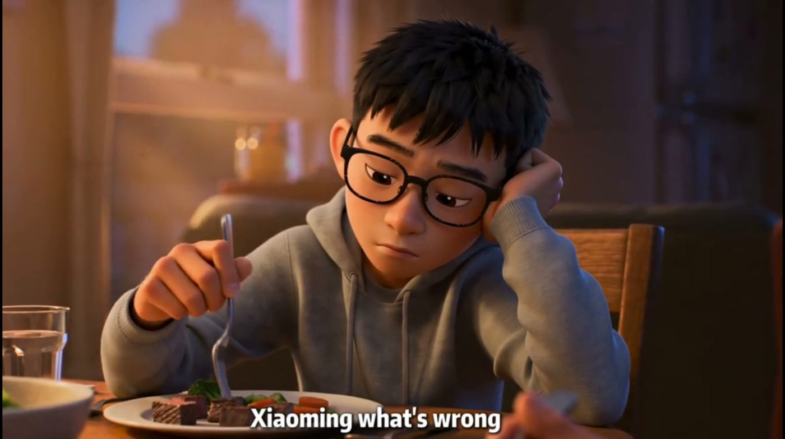
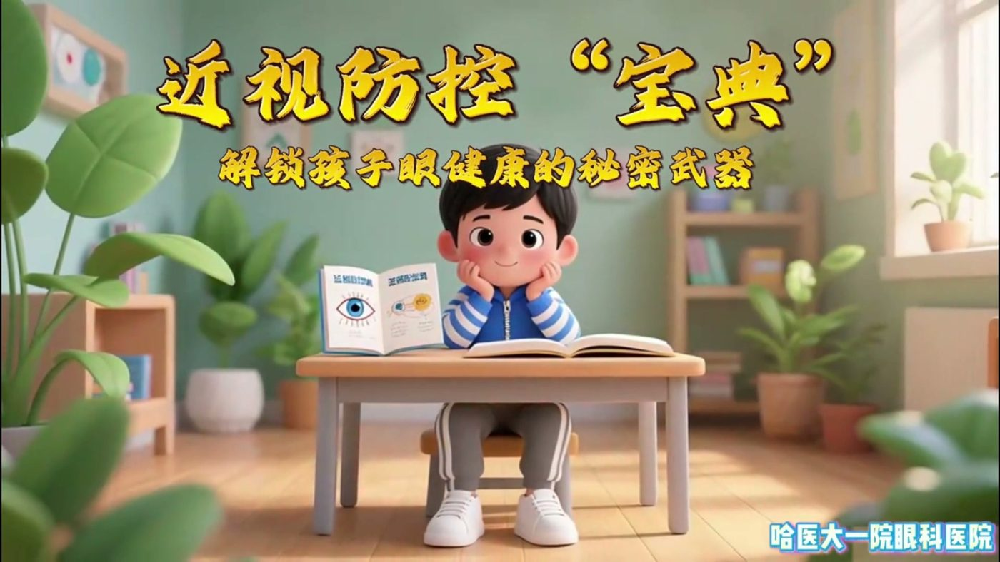
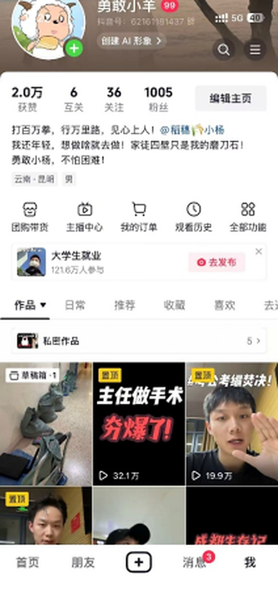

AIGC · 医疗科普3D 动画 · 1 分 38 秒
PICC 居家护理动画
把置管后的居家护理做成 3D 动画：敷贴几天换一次、穿刺点看什么、置管侧手臂注意什么，患者看完能照着做。
98秒一条成片
做过，才算数
十个做过的项目。数据口径写在卡片上，不混用、不放大。
把置管后的居家护理做成 3D 动画：敷贴几天换一次、穿刺点看什么、置管侧手臂注意什么，患者看完能照着做。
把用眼习惯、近视防控这些常识做成一条科普片。脚本、分镜、配音、成片全流程一个人跑完。
孩子误入精灵世界，想回家却越走越远。世界观、分镜、生成、配音，一条流水线跑完。
烛光里的孩子与病榻上的老人，一支 55 秒的暗黑童话。短，但每一帧都是设计过的。

把临床里最容易被误解的护理常识拆成 30 秒内容，单条 33 万播放、7000+ 赞。

零投放冷启动，靠选题本地化与发布节奏，单条最高跑到 500 万+ 播放。

用生成式工具做医学常识动画，把拍摄成本高的画面用 AI 补上，交付周期压缩到两天。
把置管后的居家护理做成 3D 动画：透明敷贴 7 天换一次、穿刺点红肿渗血要看、置管侧手臂不能按摩。
配合招生话术剪的短物料，用真实场景回答家长最关心的三个问题：学什么、怎么管、毕业去哪。
五金小件的选品、比价与俄语详情页本地化，规格表按买家最常问的问题重排。
把「收书—分拣—定价—交付」拍成一条流程片，在宿舍楼里转发，替掉一遍遍口头解释。
从故事孕育到分镜生成的一条流水线，角色资产、场景资产、剧本都在同一个后台里管。

把 62 条内容的灵感、选题、文稿、发布与复盘串成一条流水线，每天打开就知道该干什么。
试模型能推到什么程度：同一个提示词反复改，把「想象得到但拍不出来」的画面做出来。
从世界观到成片自己走完：剧本、分镜、生成、配音都在自己搭的工作台里跑。点开就能看原片。
两张截图来自我实际操盘的账号后台，数据未做任何修改。
从 0 到 1
最难的是第一条—— 杨富超
